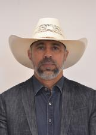
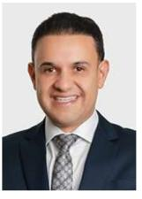
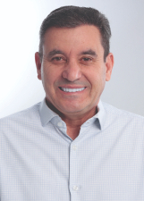
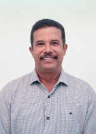
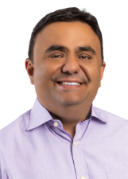
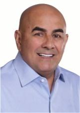
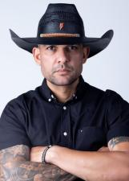
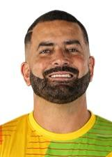

Goiás
Quem ocupa os cargos hoje e quem assume em 2027.
Resultado provisórioTSE, capturado em 29/10/2026
Poder Executivo
Administra o governo e executa as leis: saúde, educação, segurança, estradas e o orçamento.
Governador
Ronaldo CaiadoUNIÃO · 1.806.892 votos · eleito em 2022✓ Reeleito›Quem comanda cada cidade do estado.
Poder Legislativo
Cria as leis, aprova o orçamento e fiscaliza o Executivo.
Senadores (3)
 Jorge KajuruPRP · 1.557.415 votos · eleito em 2018★ Novato no Senado›VanderlanPP · 1.729.637 votos · eleito em 2018★ Novato no Senado›Wilder MoraisPL · 799.022 votos · eleito em 2022★ Novato no Senado›
Jorge KajuruPRP · 1.557.415 votos · eleito em 2018★ Novato no Senado›VanderlanPP · 1.729.637 votos · eleito em 2018★ Novato no Senado›Wilder MoraisPL · 799.022 votos · eleito em 2022★ Novato no Senado›
Deputados federais (17)
Bancada federal por partido
17 cadeiras de Goiás
- PL424%
- MDB212%
- PP212%
- PT212%
- UNIÃO212%
- PDT16%
- PSC16%
- PSD16%
- PSDB16%
- REPUBLICANOS16%
Do partido com mais cadeiras para o com menos, não por posição política. Cada partido usa a sua cor de marca; cinza é partido sem cor registrada na fonte.
Deputados federais (17): buscar e ver a lista
Deputados estaduais e distritais (41)
Assembleia por partido
41 cadeiras de Goiás
- MDB615%
- UNIÃO615%
- PRTB410%
- PL37%
- PP37%
- PT37%
- AGIR25%
- AVANTE25%
- PATRIOTA25%
- PSD25%
- PSDB25%
- REPUBLICANOS25%
- PDT12%
- PSB12%
- PSC12%
- SOLIDARIEDADE12%
Do partido com mais cadeiras para o com menos, não por posição política. Cada partido usa a sua cor de marca; cinza é partido sem cor registrada na fonte.
Deputados estaduais e distritais (41): buscar e ver a lista

Amauri RibeiroUNIÃO · 35.060 votos✓ Reeleito›Amilton FilhoMDB · 46.556 votos · eleito em 2022✓ Reeleito›Anderson TeodoroAVANTE · 25.552 votos★ Novato›Andre do PremiumAVANTE · 26.063 votos★ Novato›Antônio GomidePT · 45.256 votos✓ Reeleito›Bia de LimaPT · 24.391 votos★ Novato›Bruno PeixotoUNIÃO · 73.692 votos✓ Reeleito›
Cairo SalimPSD · 40.359 votos✓ Reeleito›Charles BentoMDB · 33.280 votos✓ Reeleito›
Clecio AlvesREPUBLICANOS · 28.322 votos · eleito em 2022★ Novato›
Coronel AdailtonPRTB · 25.610 votos · eleito em 2022✓ Reeleito›Cristiano GalindoSOLIDARIEDADE · 17.788 votos · eleito em 2022★ Novato›
CristóvãoPATRIOTA · 17.484 votos · eleito em 2022↺ Retorno›DR George MoraisPDT · 38.336 votos↺ Retorno›DR. José MachadoPSDB · 22.928 votos★ Novato›Delegado Eduardo PradoPL · 33.828 votos✓ Reeleito›Gugu NaderAGIR · 21.743 votos · eleito em 2022★ Novato›Gustavo SebbaPSDB · 27.973 votos✓ Reeleito›Henrique CésarPSC · 40.506 votos✓ Reeleito›Issy QuinanMDB · 47.453 votos★ Novato›Jamil CalifePP · 38.248 votos★ Novato›Julio PinaPRTB · 21.243 votos · eleito em 2022✓ Reeleito›Karlos CabralPSB · 18.777 votos · eleito em 2022✓ Reeleito›Lincoln TejotaUNIÃO · 41.456 votos · eleito em 2022↺ Retorno›Lineu OlimpioMDB · 29.775 votos★ Novato›Lucas CalilMDB · 50.843 votos✓ Reeleito›Lucas do ValeMDB · 55.747 votos★ Novato›Major AraújoPL · 33.928 votos · eleito em 2022✓ Reeleito›Mauro RubemPT · 22.304 votos · eleito em 2022↺ Retorno›
Paulo Cezar MartinsPL · 37.638 votos✓ Reeleito›QuirinoREPUBLICANOS · 31.559 votos · eleito em 2022★ Novato›Renato de CastroUNIÃO · 35.842 votos · eleito em 2022↺ Retorno›Rosangela RezendeAGIR · 19.965 votos · eleito em 2022★ Novato›Talles BarretoUNIÃO · 31.961 votos✓ Reeleito›Veter MartinsPATRIOTA · 30.836 votos · eleito em 2022★ Novato›Virmondes CruvinelUNIÃO · 42.925 votos✓ Reeleito›Vivian NavesPP · 38.574 votos · eleito em 2022★ Novato›Wagner NetoPRTB · 32.543 votos✓ Reeleito›Wilde CambãoPSD · 29.908 votos✓ Reeleito›ZeliPRTB · 20.967 votos · eleito em 2022★ Novato›Os eleitos de cada cidade do estado.
Poder Judiciário
Julga os conflitos e garante que as leis sigam a Constituição.
Os desembargadores do Tribunal de Justiça e do Tribunal Regional Eleitoral. Não são eleitos.
Poder Executivo
Administra o governo e executa as leis: saúde, educação, segurança, estradas e o orçamento.
Governador
Daniel VilelaMDB · 2.148.218 votos★ Novato›Quem comanda cada cidade do estado.
Poder Legislativo
Cria as leis, aprova o orçamento e fiscaliza o Executivo.
Senadores (3)
Gracinha CaiadoUNIÃO · 1.458.522 votos★ Novato no Senado›Gustavo GayerPL · 1.639.247 votos★ Novato no Senado›Wilder MoraisPL · 799.022 votos · eleito em 2022★ Novato no Senado›Deputados federais (17)
Bancada federal por partido
17 cadeiras de Goiás
- PL424%
- UNIÃO318%
- MDB212%
- PSD212%
- PT212%
- PODE16%
- PP16%
- PRD16%
- REPUBLICANOS16%
Do partido com mais cadeiras para o com menos, não por posição política. Cada partido usa a sua cor de marca; cinza é partido sem cor registrada na fonte.
Deputados federais (17): buscar e ver a lista
Deputados estaduais e distritais (41)
Assembleia por partido
41 cadeiras de Goiás
- MDB717%
- PL512%
- PT410%
- UNIÃO410%
- MOBILIZA37%
- PRD37%
- AGIR25%
- NOVO25%
- PODE25%
- PSD25%
- PSDB25%
- CIDADANIA12%
- PP12%
- PSB12%
- REPUBLICANOS12%
- SOLIDARIEDADE12%
Do partido com mais cadeiras para o com menos, não por posição política. Cada partido usa a sua cor de marca; cinza é partido sem cor registrada na fonte.
Deputados estaduais e distritais (41): buscar e ver a lista

Coronel Edson RaiadoPSD · 32.717 votos★ Novato›Coronel UrzedaPL · 40.116 votos★ Novato›DR. AmarildoNOVO · 43.130 votos★ Novato›DR. George MoraisMDB · 51.528 votos✓ Reeleito›Eduardo PradoPL · 39.446 votos✓ Reeleito›Fabricio RosaPT · 81.540 votos★ Novato›GCM Romário PolicarpoCIDADANIA · 55.337 votos★ Novato›Graciele da Arte TrigoAGIR · 37.252 votos★ Novato›Gustavo SebbaPSDB · 28.231 votos✓ Reeleito›Henrique CésarPODE · 32.364 votos✓ Reeleito›Issy QuinanMDB · 73.433 votos✓ Reeleito›Jamil CalifePP · 47.993 votos✓ Reeleito›Joscilene do MangãoAGIR · 39.977 votos★ Novato›José MachadoPSDB · 49.950 votos✓ Reeleito›
Keke da VulkanicMOBILIZA · 25.163 votos★ Novato›KátiaPT · 43.687 votos★ Novato›Lineu OlimpioMDB · 53.569 votos✓ Reeleito›Lissauer VieiraPL · 46.056 votos↺ Retorno›Lucas KitãoMOBILIZA · 22.731 votos★ Novato›MarquinhoPL · 31.039 votos★ Novato›Neto KarfanNOVO · 18.628 votos★ Novato›Paulin Vai NelePRD · 33.588 votos★ Novato›Paulo Cezar MartinsMDB · 39.275 votos✓ Reeleito›Paulo do ValePSD · 72.792 votos★ Novato›Rubens MarquesPSB · 24.564 votos↺ Retorno›Talles BarretoUNIÃO · 41.429 votos✓ Reeleito›Virmondes CruvinelUNIÃO · 53.821 votos✓ Reeleito›Wagner NetoSOLIDARIEDADE · 40.710 votos✓ Reeleito›Wilde CambãoUNIÃO · 53.550 votos✓ Reeleito›Willian PandaPODE · 21.724 votos★ Novato›Os eleitos de cada cidade do estado.
Poder Judiciário
Julga os conflitos e garante que as leis sigam a Constituição.
Os desembargadores do Tribunal de Justiça e do Tribunal Regional Eleitoral. Não são eleitos.
Como ler
★ Novato Primeiro mandato nesta casa (Câmara ou Senado).
✓ Reeleito Já estava no cargo e foi eleito de novo.
↺ Retorno Já teve mandato, mas estava fora.
Sem selo Não conseguimos ligar a pessoa a um mandato anterior. Isso não quer dizer que seja novata: simplesmente não afirmamos nada.
Provisório Só é confirmado na diplomação.